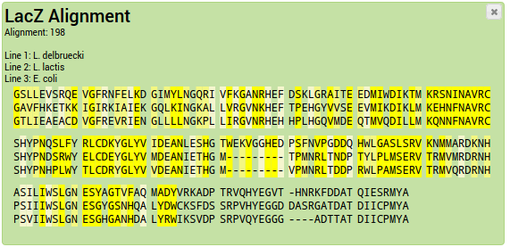
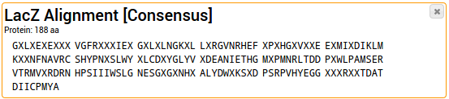
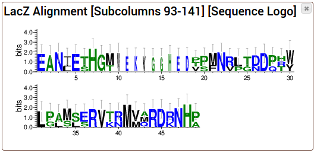
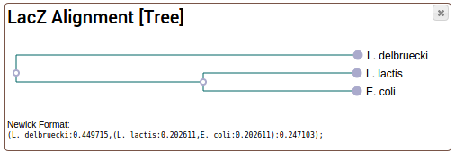

This page is part of the GeneWarrior Documentation. Go to the main site of GeneWarrior
This tutorial assumes that you already created an alignment as described in the previous tutorial (Tutorial > Create Alignment).
Alternatively, you can import an example alignment by clicking on "Load Examples", next to the "Add"-Button.
Select all your alignments that you want to analyze by clicking on them. Selected entries change the background
color.

The Consensus sequence is the most frequent letter (nucleotide or amino acid) for each column.
Take a look at this example alignment:
Sequence1 GLST
The first column is completely conserved (G), so the consensus letter is a G. The second column is only partially
conserved;
the letter L occurs most often and is chosen as the consensus. The third column is not conserved at all, it's a tie
between all three
occuring letters, and X (unknown amino acid) is used as the consensus.
Sequence2 GVA-
Sequence3 GLT-
Gaps also accounted for. In the fourth column, the gap is identified as the consensus. In the resulting consensus
sequence they are removed.
In the case above, the consensus sequence would be GLX (the gap in the fourth column is automatically
removed).
In the case of a DNA sequence alignment, ambigous nucleotide letters are used in the case of a tie.
For example if a column has two A and two C, an M is output as consensus letter.
To generate the consensus sequence from an alignment, click in the Toolbox on "Analyze Alignments > Consensus
Sequence".

The consensus sequence is added as a new DNA or Protein sequence entry into your project.
A much more sophisticated way to visualize sequence conservation than consensus sequences is the use of
Sequence logos. Each column in the alignment is depicted as a stack. The total height of the stack symbolizes
the conservation; the height of a single letter in the stack symbolizes the frequency of this letter.
The y-axis represents the information content in bits.
GeneWarrior uses the WebLogo 3-Software to generate
Sequence logos. More information about the use of sequence logos can be found on this website.
Because the WebLogo software is quite computationally intensive, Alignments are currently limited to a maximum
of 1000 columns.
To generate the sequence logo from an alignment, click in the Toolbox on "Analyze Alignments > Sequence
Logo".

The sequence logo is added as a new entry into your project.
Phylogenetic trees show the evolutionary relationship of the sequences in an alignment. It is assumed that sequences
which are
very similar to each other are much closer related then sequences with large differences. This relationship can be
visualized as
a bifurcating tree.
GeneWarrior uses the MUSCLE alignment software and its
-maketree option to generate a UPGMA tree.
Be aware that this is a quick-and-dirty way to generate a tree and does not replace a high-quality phylogenetic
tree.
Nonetheless, it is a useful way to get an approximate idea about the evolutionary relationships. Consider using PHYLIP for high quality
trees.
To generate the phylogenetic tree from an alignment, click in the Toolbox on "Analyze Alignments > Phylogenetic
Tree".

The tree is added as a new entry into your project.